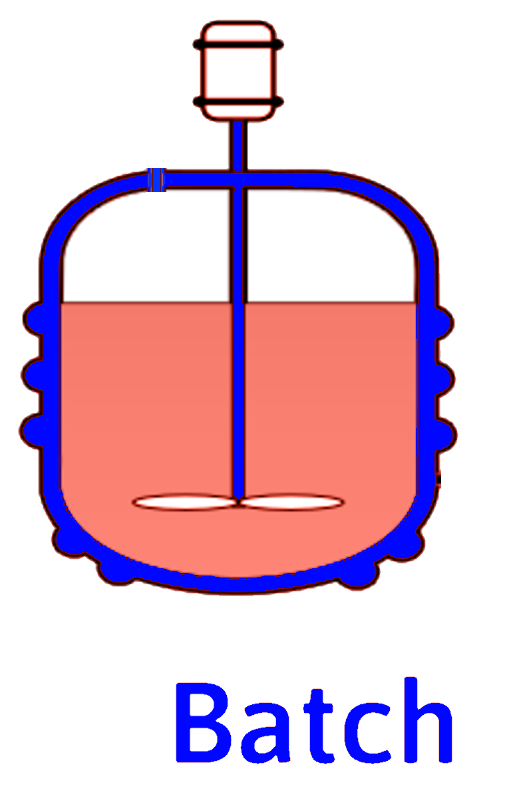
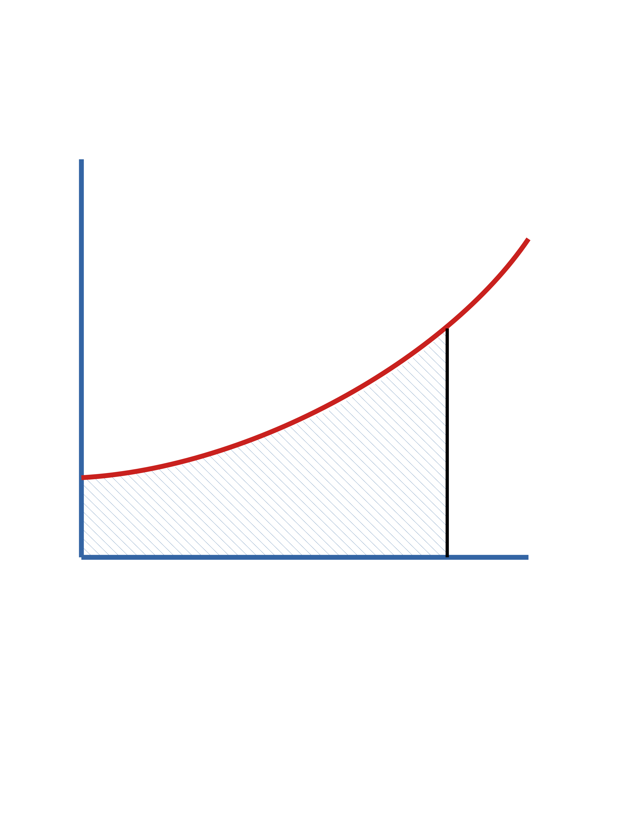
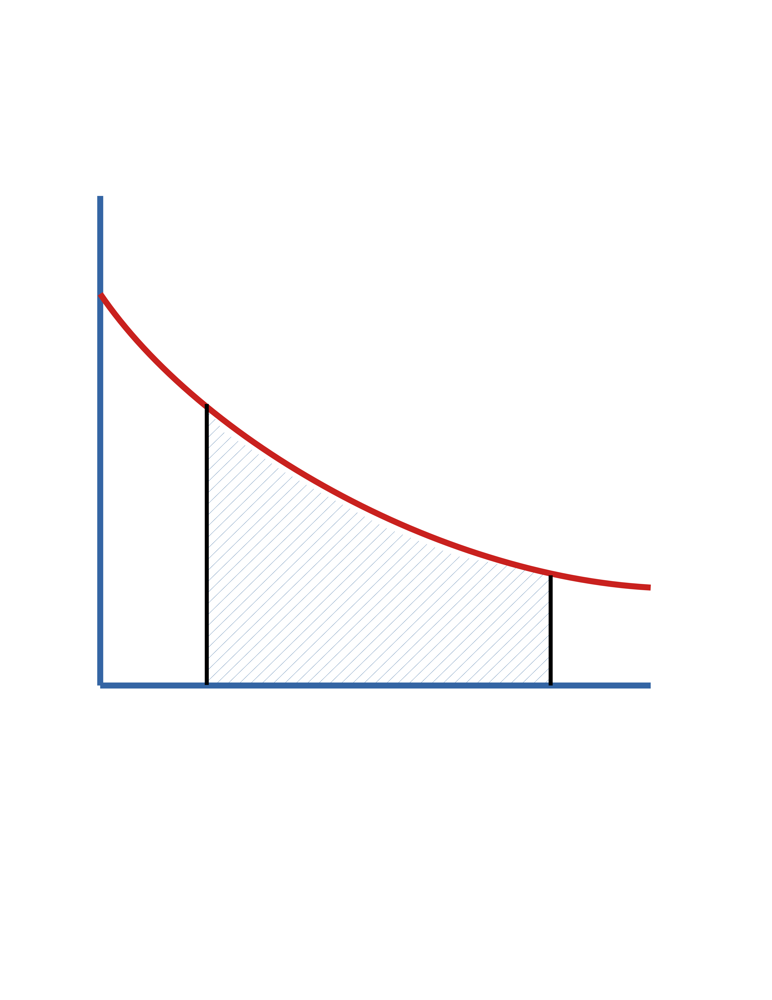
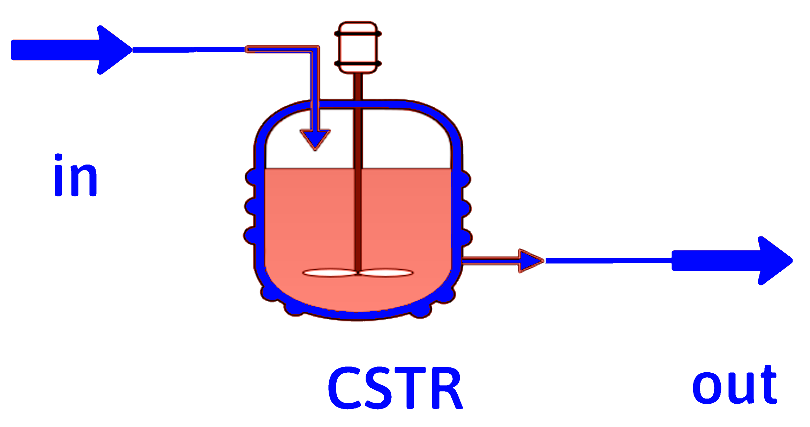
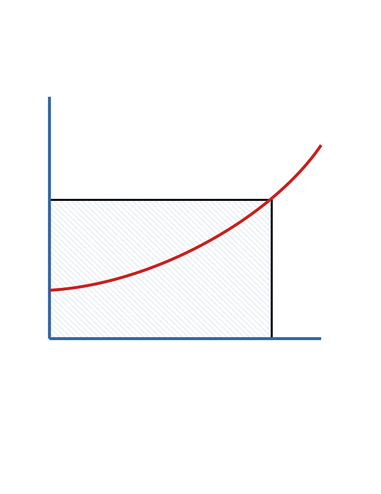
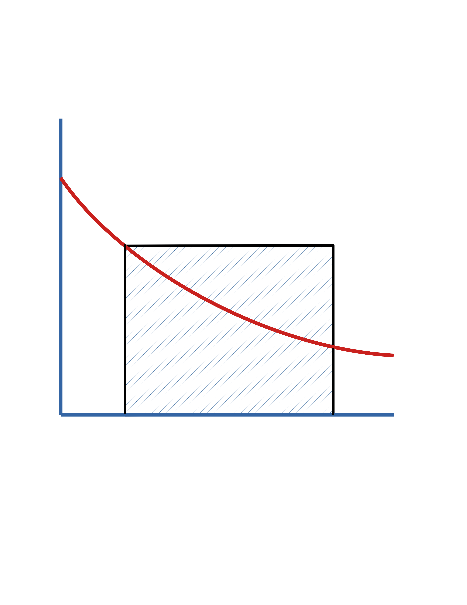
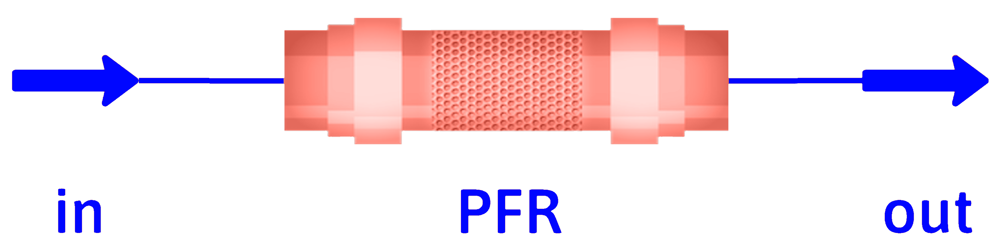
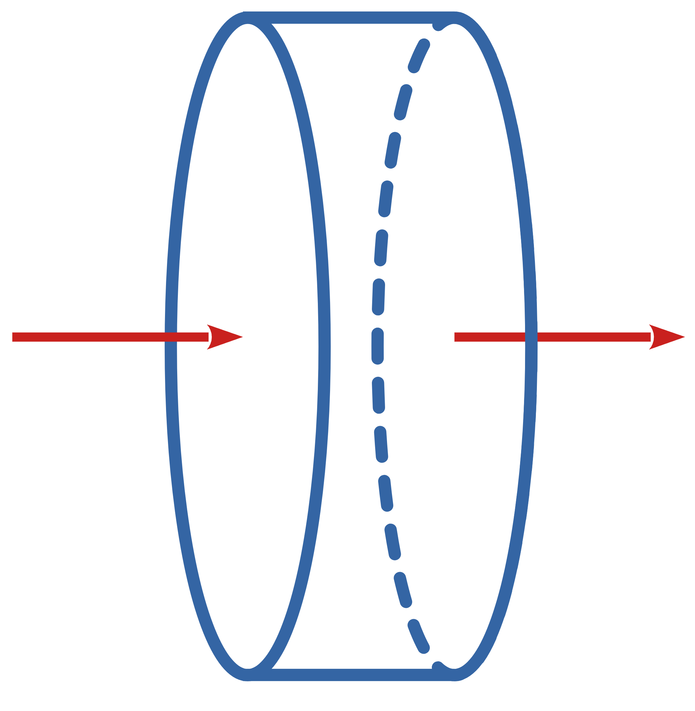

Wishing Upon a CSTR
DOFPro Team

Ideal Homogeneous Reactors
Most commercial reactors are heterogeneous reactors.
We will focus first on the ideal homogeneous reactors.
- Batch (Transient)
- Properties are uniform throughout the volume.
- Properties are evolving in time.
- CSTR (Mixed, Steady State)
- Properties are uniform throughout the volume.
- Properties are constant in time.
- PFR (Steady State)
- Properties are uniform in the radial direction, \(r\).
- Properties are evolving in the axial direction, \(z\).
- Properties are constant in time.
Note
We will not derive the transient cases for CSTRs or PFRs, but they are critically important during
plant start-up and shut-down.
Kinetic Expressions
We will rewrite our chemical reactions by dividing through by the absolute value of the stoichiometric coefficient for species \(\mathrm{A}\), giving a result of the form,
\[ \mathrm{A} + \frac{\nu_\mathrm{B}}{|\nu_\mathrm{A}|} \mathrm{B} + \cdots \rightarrow \frac{\nu_\mathrm{P}}{|\nu_\mathrm{A}|} \mathrm{P} + \frac{\nu_\mathrm{S}}{|\nu_\mathrm{A}|} \mathrm{S} + \cdots \]
Essentially every chemical reactor class ever follows this practice.
With \(r_\mathrm{A}\) equal to \(\nu_\mathrm{A} r = - r\), we will limit ourselves at the present time to irreversible reactions with kinetics of the form
\[ -r_\mathrm{A} = k C_\mathrm{A}^n C_\mathrm{B}^m \]
Batch Reactor
For our transient, spatially uniform, constant-volume batch reactor

\[ \dot{n}_{j_0} - \dot{n}_j + \int_{V_R} r_j dV = \frac{dn_j}{dt} \]
\[ r_j \ne r_j(\mathrm{position)}) \implies \int_{V_R} r_j dV = r_j \int_{V_R} dV = r_j V_R \]
or
\[ \frac{1}{V_R} \frac{dn_j}{dt} = r_j\ \ \text{ or }\ \ \frac{dC_j}{dt} = r_j \]
Batch Reactor (cont.)
For Species A (constant \(V_R\))
\[ n_\mathrm{A} = n_\mathrm{A_0} (1- f_\mathrm{A}) \]
and
\[ \frac{1}{V_R}\frac{dn_\mathrm{A}}{dt} = \frac{n_\mathrm{A_0}}{V_R}\frac{d(1- f_\mathrm{A})}{dt} = -C_\mathrm{A_0} \frac{df_\mathrm{A}}{dt} \]
or \[ \frac{1}{V_R}\frac{dn_\mathrm{A}}{dt} = \frac{dC_\mathrm{A}}{dt} \]
Batch Reactor (cont.)
In terms of \(f_\mathrm{A}\)
\[ -C_\mathrm{A_0} \frac{df_\mathrm{A}}{dt} = r_\mathrm{A} \]
\[ \int_0^t dt = C_\mathrm{A_0} \int_0^{f_\mathrm{A}} \frac{df_\mathrm{A}}{(-r_\mathrm{A})} \]
\[ t = C_\mathrm{A_0} \int_0^{f_\mathrm{A}} \frac{df_\mathrm{A}}{(-r_\mathrm{A})} \]
In terms of \(C_\mathrm{A}\)
\[ \frac{dC_\mathrm{A}}{dt} = r_\mathrm{A} \]
\[ \int_0^t dt = \int_{C_\mathrm{A_0}}^{C_\mathrm{A}} \frac{dC_\mathrm{A}}{r_\mathrm{A}} \]
\[ t = \int_{C_\mathrm{A_0}}^{C_\mathrm{A}} \frac{dC_\mathrm{A}}{r_\mathrm{A}} \]
Batch Reactor (cont.)
In terms of \(f_\mathrm{A}\)
\[ t = C_\mathrm{A_0} \int_0^{f_\mathrm{A}} \frac{df_\mathrm{A}}{(-r_\mathrm{A})} \]

In terms of \(C_\mathrm{A}\)
\[ t = \int_{C_\mathrm{A_0}}^{C_\mathrm{A}} \frac{dC_\mathrm{A}}{r_\mathrm{A}} \]

\(0\)
\(f_\mathrm{A}\)
\(\frac{C_\mathrm{A_0}}{(-r_\mathrm{A})}\)
\(\mathrm{Area} = t\)
\(0\)
\(C_\mathrm{A_0}\)
\(C_\mathrm{A}\)
\(\frac{1}{(-r_\mathrm{A})}\)
\(\mathrm{Area} = t\)
CSTR (Mixed)

Steady state, spatially uniform
\[ \dot{n}_{j_0} - \dot{n}_j + \int_{V_R} r_j dV = \frac{dn_j}{dt} \]
\[ r_j \ne r_j(\mathrm{position)} \implies \dot{n}_{j_0} - \dot{n}_j + r_j V_R = 0 \]
\[ \dot{n}_{j_0} = \dot{n}_j + (-r_j) V_R \]
For species \(\mathrm{A}\),
\[ V_R = \frac{\dot{n}_\mathrm{A_0}-\dot{n}_\mathrm{A}}{-r_\mathrm{A}} \]
CSTR (cont.)
Define the space time, \(\tau \equiv \frac{V_R}{\dot{V}_0}\)
In terms of \(f_\mathrm{A}\)
\(\ \ \ \ \dot{n}_\mathrm{A} = \dot{n}_\mathrm{A_0}(1 - f_\mathrm{A})\)
\(\ \ \ \ (-r_\mathrm{A}) V_R = \dot{n}_\mathrm{A_0}(f_\mathrm{A})\)
and
\(\ \ \ \ \dot{n}_\mathrm{A_0}=\dot{V}_0 C_\mathrm{A_0}\)
then
\(\ \ \ \ \tau = \frac{V_R}{\dot{V}_0} = \frac{C_\mathrm{A_0}f_\mathrm{A}}{{-r_\mathrm{A}}}\)
In terms of \(C_\mathrm{A}\)
\(\ \ \ \ \dot{V}_0 = \dot{V}\)
\(\ \ \ \ \dot{n}_\mathrm{A_0} = \dot{V}_0C_\mathrm{A_0}\)
\(\ \ \ \ \dot{n}_\mathrm{A} = \dot{V}_0C_\mathrm{A}\)
then
\(\ \ \ \ \tau = \frac{V_R}{\dot{V}_0} = \frac{C_\mathrm{A_0}- C_\mathrm{A}}{{-r_\mathrm{A}}}\)
CSTR (cont.)
In terms of \(f_\mathrm{A}\)
\(\ \ \ \ \tau = \frac{V_R}{\dot{V}_0} = \frac{C_\mathrm{A_0}f_\mathrm{A}}{{-r_\mathrm{A}}}\)

In terms of \(C_\mathrm{A}\)
\(\ \ \ \ \tau = \frac{V_R}{\dot{V}_0} = \frac{C_\mathrm{A_0}- C_\mathrm{A}}{{-r_\mathrm{A}}}\)

\(0\)
\(f_\mathrm{A}\)
\(\frac{C_\mathrm{A_0}}{(-r_\mathrm{A})}\)
\(\mathrm{Area} = \tau\)
\(0\)
\(C_\mathrm{A_0}\)
\(C_\mathrm{A}\)
\(\frac{1}{(-r_\mathrm{A})}\)
\(\mathrm{Area} = \tau\)
PFR (Tubular)

Steady state, radially uniform, axially varies
Differential Element

\(\dot{n}_j\)
\(\dot{n}_j+d\dot{n}_j\)
\(dV\)
\[ \dot{n}_j - (\dot{n}_j + d\dot{n}_j) + r_j dV = \frac{dn_j}{dt} \]
\[ \frac{d\dot{n}_j}{dV} = r_j \]
For reactant \(\mathrm{A}\)
\[ \int_0^{V_R} dV = \int_{\dot{n}_\mathrm{A0}}^{\dot{n}_\mathrm{A}} \frac{d\dot{n}_\mathrm{A}}{r_\mathrm{A}}, \]
\[ V_R = \int_{\dot{n}_\mathrm{A0}}^{\dot{n}_\mathrm{A}} \frac{d\dot{n}_\mathrm{A}}{r_\mathrm{A}} \]
PFR (cont.)
To get the expression in terms of \(f_\mathrm{A}\), as before
\(\ \ \ \ \ \ \ \dot{n}{_\mathrm{A}} = \dot{n}{_\mathrm{A0}} ( 1 - f_\mathrm{A})\)
and
\(\ \ \ \ \ \ \ d\dot{n}{_\mathrm{A}} = -\dot{n}{_\mathrm{A0}} df_\mathrm{A}\)
Making the substitutions and dividing by \(\dot{n}_\mathrm{A0}\)
\[ \frac{V_R}{\dot{n}_\mathrm{A0}} = \frac{\tau}{C_\mathrm{A0}} = \int_0^{f_\mathrm{A}} \frac{df_\mathrm{A}}{(-r_\mathrm{A})} \]
or
\[ \tau = C_\mathrm{A0} \int_0^{f_\mathrm{A}} \frac{df_\mathrm{A}}{(-r_\mathrm{A})} \]
In terms of \(C_\mathrm{A}\)
\[ \tau = \int_{C_\mathrm{A0}}^{C_\mathrm{A}} \frac{dC_\mathrm{A}}{r_\mathrm{A}} \]
PFR (cont.)
In terms of \(f_\mathrm{A}\) \[ \tau = C_\mathrm{A_0} \int_0^{f_\mathrm{A}} \frac{df_\mathrm{A}}{(-r_\mathrm{A})} \]
In terms of \(C_\mathrm{A}\) \[ \tau = \int_{C_\mathrm{A_0}}^{C_\mathrm{A}} \frac{dC_\mathrm{A}}{r_\mathrm{A}} \]
\(0\)
\(f_\mathrm{A}\)
\(\frac{C_\mathrm{A_0}}{(-r_\mathrm{A})}\)
\(\mathrm{Area} = \tau\)
\(0\)
\(C_\mathrm{A_0}\)
\(C_\mathrm{A}\)
\(\frac{1}{(-r_\mathrm{A})}\)
\(\mathrm{Area} = \tau\)
Example, \(-r_\mathrm{A} = k C_\mathrm{A} = k C_\mathrm{A_0}(1-f_\mathrm{A})\)
Batch
\[ t = - \int_{C_\mathrm{A0}}^{C_\mathrm{A}} \frac{dC_\mathrm{A}}{k C_\mathrm{A}} \]
\[ t=\frac{1}{k}\ln \frac{C_\mathrm{A0}}{C_\mathrm{A}} \]
PFR
\[ \tau = - \int_{C_\mathrm{A0}}^{C_\mathrm{A}} \frac{dC_\mathrm{A}}{k C_\mathrm{A}} \]
\[ \tau=\frac{1}{k}\ln \frac{C_\mathrm{A0}}{C_\mathrm{A}} \]
CSTR
\[ \tau = - \frac{C_\mathrm{A0} - C_\mathrm{A}} {k C_\mathrm{A}} \]
\[ \tau=\frac{1}{k} \left( \frac{C_\mathrm{A0}}{C_\mathrm{A}} - 1 \right) \]
or
\[ t = {C_\mathrm{A0}} \int_0^{f_\mathrm{A}} \frac{df_\mathrm{A}}{k C_\mathrm{A0}(1-f_\mathrm{A})} \]
\[ t = - \frac{1}{k}\ln (1-f_\mathrm{A}) \]
\[ \tau = {C_\mathrm{A0}} \int_0^{f_\mathrm{A}} \frac{df_\mathrm{A}}{k C_\mathrm{A0}(1-f_\mathrm{A})} \]
\[ \tau = - \frac{1}{k}\ln (1-f_\mathrm{A}) \]
\[ \tau = \frac{{C_\mathrm{A0}f_\mathrm{A}} } {k C_\mathrm{A0}(1-f_\mathrm{A})} \]
\[ \tau = \frac{{f_\mathrm{A}} } {k (1-f_\mathrm{A})} \]
The Takeaways
- The three ideal homogeneous reactor are batch, CSTR, and PFR.
- For constant-density or constant-volume batch and PFR reactors, the design equations are the same, except for the processing time, \(t\), in the batch being replaced by the space time, \(\tau\), in the PFR.
- The CSTR model results in (often nonlinear) algebraic equations instead of the ordinary differential equations for the batch and PFR.
- The design equations can be expressed in terms of fractional conversion or concentration.
Thanks for watching!
The previous video in the series is in the link in the upper left. The next video in the series, is in the upper right. To learn more about Chemical and Thermal Processes, visit the website linked in the description.